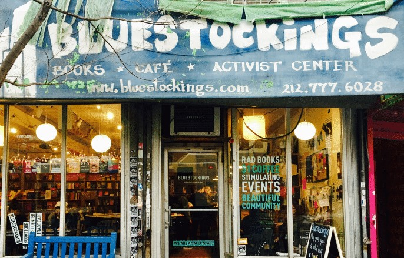

Shedding Light On New Possibilities
Governments have enforced policies trying to improve the current condition; as for independent bookstores, the owners have learned to apply diverse strategies to overcome the plight.
Fixed-Book Price, also known as FBP, refers to a market mechanism that aims to regulate book price by laws or agreements. FBP originated from the “Net Book Agreement” in the United Kingdom and was founded by the associations among publishers, bookstores, and writers. During the time the agreement took effect, while bookstores could purchase books from publishers without extra fees, they are required to sell books no lower than the price set by publishers. Nowadays, Fixed Book Price mainly targets the end of the book chain such as bookstores or markets and aside from uniting the selling price of books, in some countries it functions by regulating the range of discounts. For example, in 1981, Jack Lang, the Minister of Culture in France, believed that books are not like normal goods and ought to be protected from the market’s competetion. He therefore established law to regulate book price, which was later known as the “Lang Law” and considered one of the main reasons for the current prosperous publishing industry in France.
In Japan, there’s one well-known example of association connecting people; that is, the “agricultural cooperative” which gathers local farmers and creates more opportunity to sell their crops. In terms of independent bookstores, association could help lower the price difference between bookstores by combing orders from each individual bookstore before making purchases from publishers. Moreover, as an assembly of independent bookstores, it is more likely for the association to be known by general public and its voices be heard by the government. For example, in Taiwan, a bookseller association named “台灣友善書業供給合作社” had held several citizen forums over the years on different topics; in 2018, there’s even one subsidized by the Ministry of Culture about how Fixed Book Price had influenced bookstores in Taiwan. Through the association, opinions from each independent bookstore could be gathered and eventually become strong power to influence government policies.
While the relatively smaller scale has brought some difficulties, it also means that independent bookstores have more elasticity when it comes to operation. For one, the owners of independent bookstores could focus on local cultures or beliefs they hold when opening the bookstores. Based on the goals of bookstores' owners, they could either hold activities or cooperate with organizations with same beliefs. In addition, bookstores could merge with coffee shop or work with other shops to add diversity to its products and attract more customers. For example, in New York City in the US, an independent bookstore called “Bluestockings” offers a wide collection of books about feminism, gender studies, etc. along with a center open for workshops, performance, etc. almost every night. Aside from that, the bookstore has a café that serves meals for readers to enjoy while reading.
面對如今艱鉅的情況，政府實行各項政策協助獨立書店，而書店本身則應用多項策略力圖度過難關。
「圖書統一定價制度」，簡稱「FBP」，起源於英國的「淨價書協議」並且由出版者協會、書商協會、作家協會共同議定；協議主要規範是出版社將書本以原始價格販售給書店，而書店則必須以出版社訂定的標價販賣書籍。如今圖書定價制度主要規範書本供應鏈的下游，包括書店集會販賣書籍雜誌的超市等，而除了直接統一販售價格，它們也會藉由規範打折幅度管制書價。例如法國在1981年的文化部長「賈克朗」以書本與其他商品不同理應接受特別的照顧不受市場宰割為由，建立圖書定價制度。此制度因此被稱為「賈克朗法」並被認為是其中一項造就法國如今出版產業蓬勃的原因。
在日本農業間的合作社相當為人所知並且對於地方小農販賣作物幫助甚多。對於獨立書店而言，合作組織則可以整合書店間的訂單以和大型書店一樣降低書本成本，另外，相較個別的書店，大眾更容易接觸到不同書店整合的合作組織，政府也更有可能採納由聯盟提出的方案或想法。在台灣，「台灣友善書業供給合作社」舉辦過多場公民論壇，在2018年，更是由文化部補助舉辦以圖書定價制對台灣書業影響為主題的討論會。通過組織聯盟整合各獨立書店的意見，最後提供給政府的提案將會更加有力不容忽視。
儘管因為規模較小，獨立書店需要面對不少的困境難題，小規模經營同時也賦予書店更具彈性的營運模式。其中之一便是讓書店可以更著重在地方文化或是店主個人所秉持的理念，從這個角度出發，書店可以成為各種相關活動的舉辦者或者和有相同理想的組織聯盟合作。另外，書店可以混合咖啡廳等其他類型的店舖經營，一方面增加商品多元性，另一方面吸引更多顧客；例如在美果紐約市的一間叫「Bluestockings」的書店除了提供相當豐富的與女性主義、性別多元等有關的書籍，店內也有一個舞台空間幾乎每晚舉辦工作坊或表演等活動。除此之外，書店本身也有經營咖啡廳提供空間讓讀者能夠邊閱讀邊享受美食。